Imagem: Dire Wolf (loja oficial)Construção de baralho · Alocação de trabalhadores
Como jogar Duna: Imperium Uprising
Para quem nunca jogou1 a 4 ou 6 jogadoresEdição Galápagos (Asmodee)
· Redação Elite Boardgamers
Resumo em 1 minuto
Você joga cartas para mandar Agentes aos espaços do tabuleiro, usa Espiões para entrar onde já há gente, revela o resto da mão para comprar cartas e lutar no Conflito da rodada com tropas e vermes da areia, e vence quem tiver mais Pontos de Vitória quando alguém chegar a 10.
Cada carta jogada manda um Agente a um espaço vazio com o mesmo ícone; o custo se paga antes, e um Espião ligado ao espaço deixa entrar mesmo ocupado.
No Turno de Revelar, as cartas guardadas dão Persuasão para adquirir cartas e espadas para o Conflito, onde tropa vale 2, verme da areia vale 3 e o verme dobra a recompensa.
Pontos vêm de Influência, Alianças, Conflitos e pares de ícones de batalha; a partida acaba ao fim da rodada em que alguém faz 10 ou quando o Baralho de Conflito acaba.
Como você aprende: 5 etapas, da mesa montada à contagem de pontosLeitura do essencial: cerca de 15 min
À vista, só o essencial para jogar. O que abre com + é explicação, exemplo, exercício ou regra de caso especial: abra quando precisar.
Montar a mesa passo a passo
A montagem segue as p. 4 e 5 do manual, com as letras dele, de A a H; com 1, 2 ou 6 jogadores ela muda (fim desta seção).
O que vem na caixap. 3:
Componente
Quantidade
Tabuleiro, dupla face (o verso é do modo de 6)
1
Folheto Guia dos Espaços no Tabuleiro (vem na caixa; não está na biblioteca de downloads)
1
Líderes, dupla face
9 (1 só com o Módulo CHOAM)
Cartas de Conflito
16: 3 Conflito I, 9 Conflito II, 4 Conflito III
Cartas de Objetivo
5
Cartas de Intriga
44 (4 só com o Módulo CHOAM)
Cartas do Baralho Imperial
69 (4 só com o Módulo CHOAM)
Cartas da Reserva
18: 8 Prepare o Caminho, 10 A Especiaria Deve Fluir
Água
20 marcadores
Solari
8 grandes (valem 5) e 20 pequenos (valem 1)
Especiaria
7 grandes (valem 5) e 20 pequenos (valem 1)
Vermes da areia
4 de plástico e 4 de madeira (use um tipo ou os dois)
Muralha-Escudo, marcador de Primeiro Jogador, Ficha Feyd (do Líder Feyd-Rautha; vai na trilha de Treinamento do Líder, p. 17)
1 de cada
Marcadores de Aliança; Ganchos de Criador
4 de cada
Por cor de jogador
baralho inicial de 10 cartas, 16 cubos, 2 discos (Pontos e Conselheiro), 3 Espiões, 3 marcadores de Controle, 3 Agentes, 1 marcador de Combate
À parte
20 + 10 fichas de Contrato (Módulo CHOAM, p. 16); 37 cartas da Casa Hagal e 10 cartas de Rival (folheto Rivais, p. 1); componentes do modo de 6 (folheto Seis, p. 1)
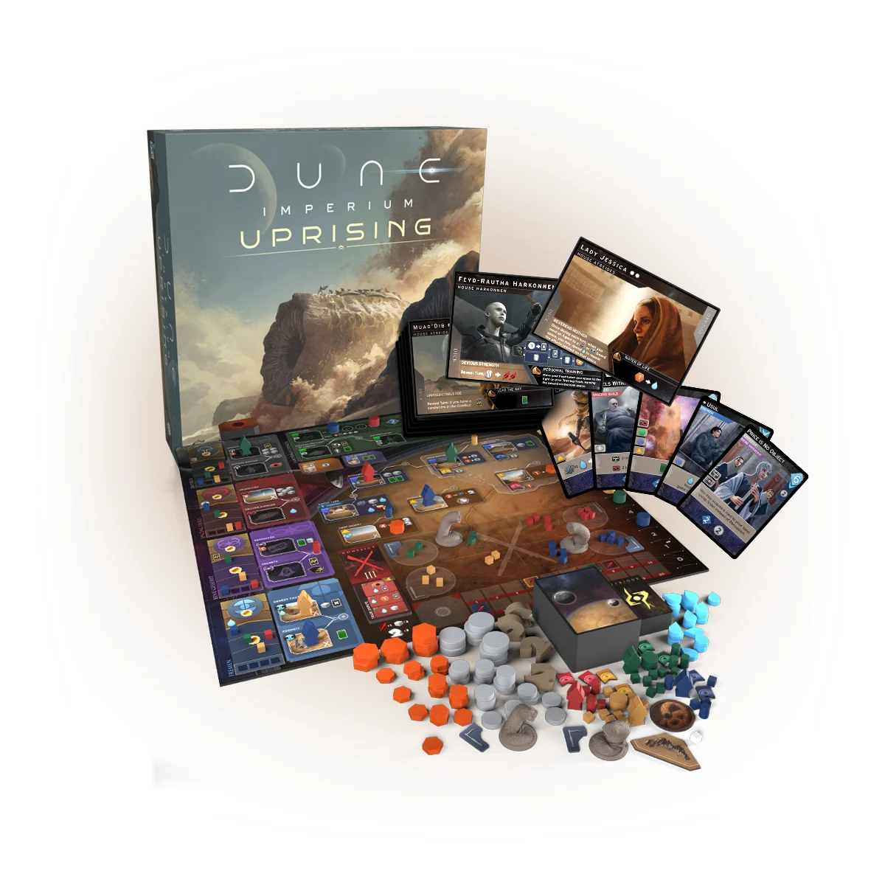
Os componentes da caixa: tabuleiro, Líderes, cartas e peças. Imagem: Dire Wolf (loja oficial), edição em inglês
A. O tabuleirop. 4
Ponha o tabuleiro no meio da mesa, com o lado mostrado no manual para cima; o verso é do modo de 6 jogadores (Seis, p. 2).
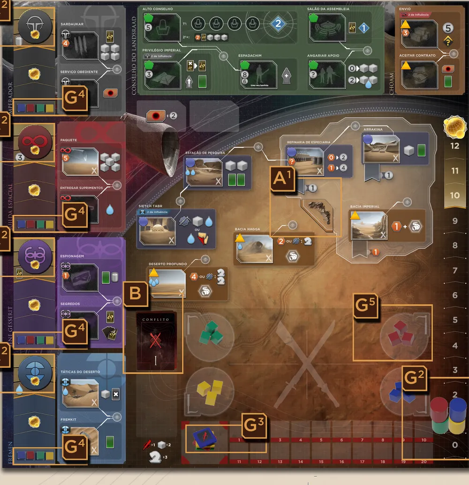
O tabuleiro montado, com as letras dos passos do manual: A1 (Muralha-Escudo), A2 (Alianças), B (Conflito), G2 a G5 (marcadores e tropas dos jogadores). Ilustração: manual Galápagos p. 4 e 5
Ponha a Muralha-Escudo no lugar dela, abaixo da Refinaria de Especiaria (A1). Ela protege Refinaria de Especiaria, Arrakina e Bacia Imperial p. 10.
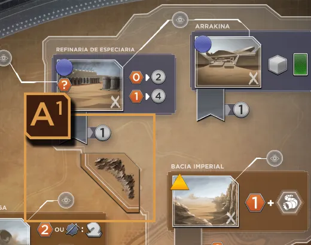
A Muralha-Escudo (A1) diante dos três locais que ela protege: Refinaria de Especiaria, Arrakina e Bacia Imperial. Ilustração: manual Galápagos p. 4 e 5
Ponha os 4 marcadores de Aliança no alto das Trilhas de Influência, um em cada: Imperador, Guilda Espacial, Bene Gesserit e Fremen (A2).
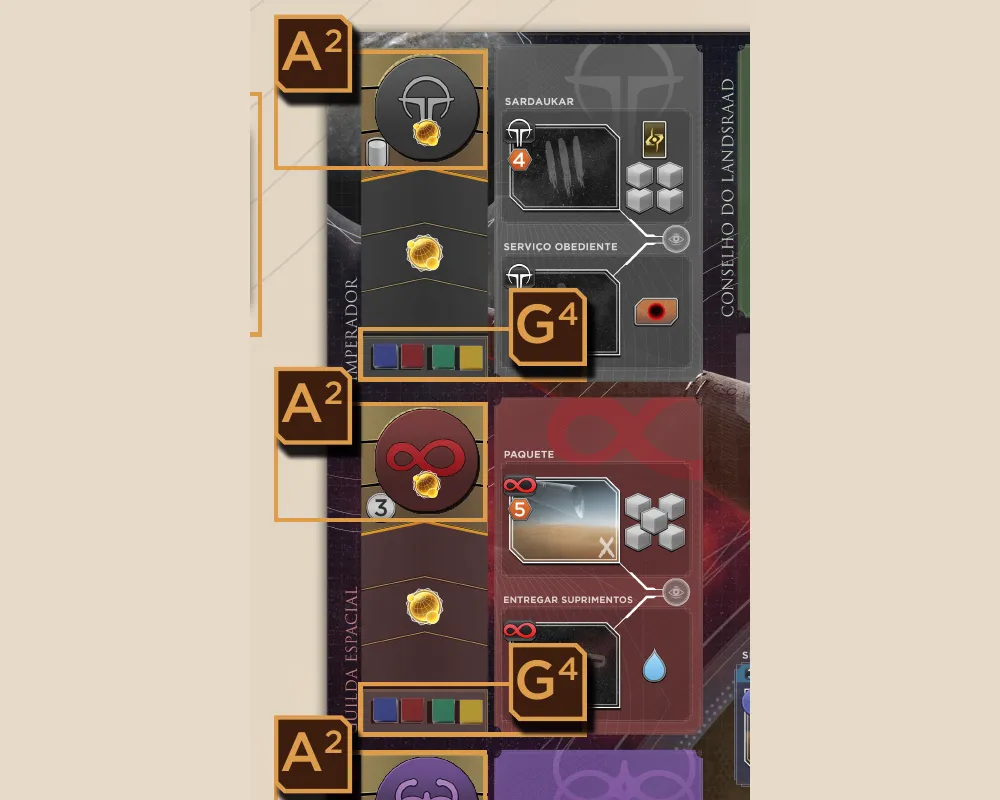
As trilhas do Imperador e da Guilda Espacial: o marcador de Aliança no alto (A2) e, embaixo, o espaço dos cubos dos jogadores (G4, passo 18). Ilustração: manual Galápagos p. 4
B. O Baralho de Conflitop. 4
Separe as Cartas de Conflito pelo verso: Conflito I, II e III.
Embaralhe as 4 de Conflito III e ponha todas, viradas para baixo, no espaço do Conflito no tabuleiro.
Embaralhe as 9 de Conflito II e ponha 5, viradas para baixo, em cima delas.
Embaralhe as 3 de Conflito I e ponha 1, virada para baixo, em cima de tudo. O baralho fica com 10 cartas; as 6 que sobraram voltam à caixa sem que ninguém as veja.
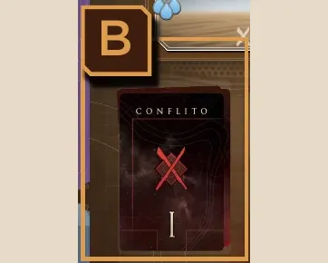
O Baralho de Conflito no seu espaço do tabuleiro (B), com uma carta de Conflito I no topo. Ilustração: manual Galápagos p. 4
C. As cartas em volta do tabuleirop. 4
Sem o Módulo CHOAM, recomendado só depois da primeira partida p. 16, deixe na caixa as cartas com o símbolo dele.
Embaralhe o Baralho de Intriga e deixe-o virado para baixo ao lado do tabuleiro (C1).
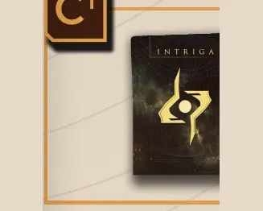
O Baralho de Intriga, virado para baixo (C1). Ilustração: manual Galápagos p. 4
Embaralhe o Baralho Imperial, deixe-o virado para baixo e abra 5 cartas: é a Linha Imperial, de onde se adquirem cartas (C2).
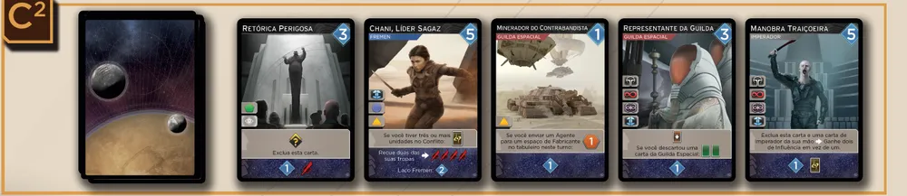
O Baralho Imperial e as 5 cartas abertas da Linha Imperial (C2). Ilustração: manual Galápagos p. 4
Ao lado da Linha Imperial, faça duas pilhas com as cartas da Reserva: Prepare o Caminho e A Especiaria Deve Fluir (C3).
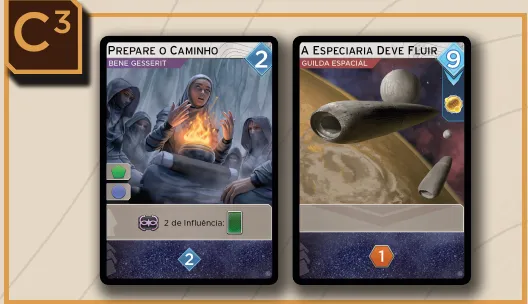
As duas pilhas da Reserva: Prepare o Caminho e A Especiaria Deve Fluir (C3). Ilustração: manual Galápagos p. 5
D, E e F. Líder, baralho e recursosp. 4 e 5
Cada jogador recebe um Líder, escolhido ou sorteado (D); Shaddam Corrino IV, só com o Módulo CHOAM. Ao lado do nome, cada Líder tem de um a três ícones de complexidade; na primeira partida, o manual recomenda os que têm um só p. 4.
Cada jogador embaralha o seu baralho inicial de 10 cartas e o põe virado para baixo à esquerda do Líder (E). As 10 cartas são iguais para todos: Argumento Convincente (2), Adaga (2), Diplomacia (1), Duna, o Planeta Deserto (2), Reconhecimento (1), Buscar Aliados (1) e Anel do Sinete (1) p. 3.
Cada jogador pega 1 água para o seu estoque (F1). Ninguém começa com Solari, especiaria ou Intriga.
Monte o banco ao lado do tabuleiro: Solari, especiaria, o resto da água, os vermes da areia e os 4 Ganchos de Criador (F2). O banco é infinito na prática: se algo acabar, use outra coisa no lugar p. 5.
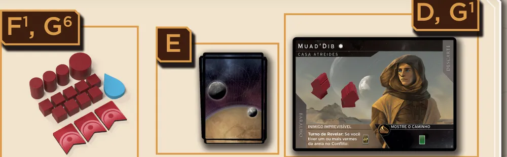
O estoque de um jogador: água e peças (F1, G6), baralho inicial (E) e Líder com 2 Agentes (D, G1). Ilustração: manual Galápagos p. 5
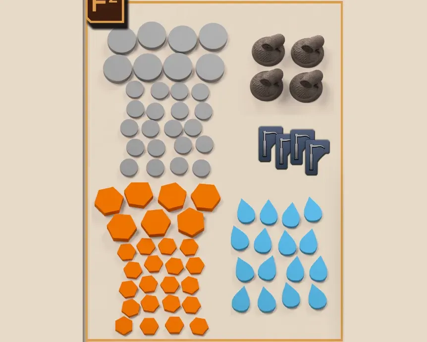
O banco: Solari, especiaria, água, vermes da areia e Ganchos de Criador (F2). Ilustração: manual Galápagos p. 5
O Líder e o Anel do Sinete. A habilidade da esquerda do Líder vale sempre; a da direita só quando você joga a carta Anel do Sinete num Turno do Agente, que além disso manda o Agente como qualquer carta p. 6 e 20.
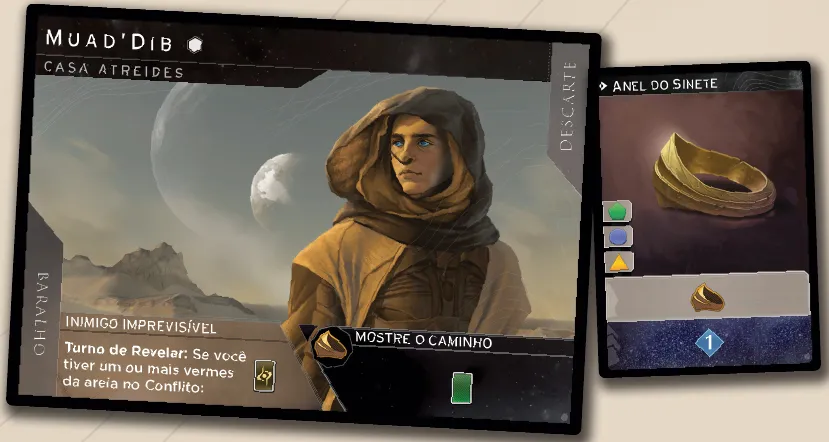
Muad'Dib e a carta Anel do Sinete: embaixo, à esquerda, a habilidade que vale sempre; à direita, a do Anel do Sinete. Ilustração: manual Galápagos p. 6
G. As peças de cada corp. 5
Ponha 2 Agentes sobre o seu Líder. O terceiro, o Espadachim, fica perto do tabuleiro e entra pelo espaço Espadachim (G1; Guia).
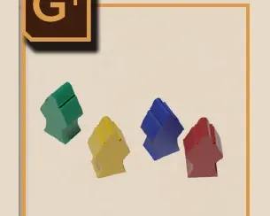
Os Agentes das quatro cores (G1). Ilustração: manual Galápagos p. 5
Ponha um disco na Trilha de Pontuação: no espaço 1 com 4 jogadores, no espaço 0 nos outros casos (G2). O outro disco, o de Conselheiro, fica no estoque.
Ponha o marcador de Combate no espaço 0 da Trilha de Combate, com o lado da espada para cima (G3). O lado +20 só se usa quando a força passa de 20 p. 12.
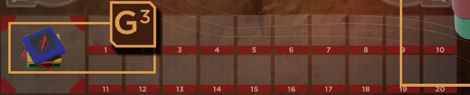
Os marcadores de Combate no espaço 0 da Trilha de Combate (G3). Ilustração: manual Galápagos p. 4
Ponha 4 cubos, um no primeiro espaço de cada Trilha de Influência (G4), o de Influência 0.
Os outros 12 cubos são as suas tropas: ponha 3 na guarnição, o círculo do tabuleiro mais perto de você (G5). As outras 9 ficam no estoque.
Deixe o resto no seu estoque, à vista: tropas, 3 Espiões, 3 marcadores de Controle e o disco de Conselheiro (G6).
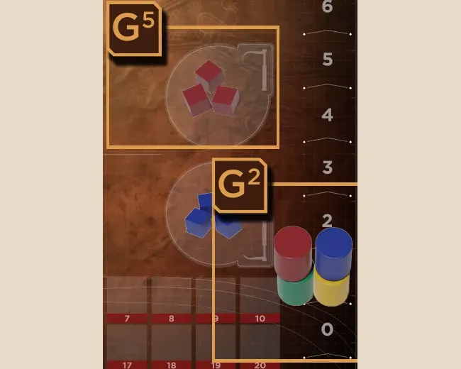
Uma guarnição com 3 tropas (G5) e os discos de Pontos na Trilha de Pontuação (G2). Ilustração: manual Galápagos p. 5
H. Objetivos e quem começap. 5
Separe as Cartas de Objetivo. Algumas trazem "1-3J" ou "4/6J": devolva à caixa as que não servem para o número de jogadores.
Embaralhe as que ficaram; cada jogador compra uma ao acaso e a deixa virada para cima no estoque.
Quem tiver o Objetivo que mostra o marcador de Primeiro Jogador pega esse marcador e começa. A vez segue no sentido horário p. 8.
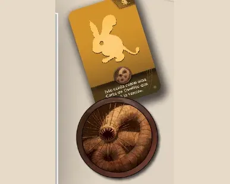
Uma Carta de Objetivo, com o ícone de batalha Rato-Canguru, e o marcador de Primeiro Jogador (H). Ilustração: manual Galápagos p. 5
O que muda com o número de jogadores (p. 5 e 14; Rivais; Seis):
Jogadores
Disco de Pontos começa em
3ª recompensa do Conflito
Extra
3
0
só em empate no 2º lugar
não
4
1
para o 3º lugar
não
2
0
só em empate no 2º lugar
1 Rival
1
0
só em empate no 2º lugar
2 Rivais
6
4 (Comandantes) e 1 (Aliados)
para o 3º lugar
equipes
O que volta para a caixa: além do que os passos 7, 21 e C já mandam guardar, por dedução, as cores sem dono e, com 3 ou 4 jogadores, as cartas de Rival e da Casa Hagal p. 3.
Partida de 2 (e solo) com Rivais (folheto Rivais)
Com 2 jogadores, monte a mesa como acima, com os discos no 0, e acrescente um oponente automático, o Rival; no solo, são dois. O Rival manda Agentes pelas cartas da Casa Hagal, um baralho próprio dele, luta nos Conflitos e, se chegar a 10 pontos, ativa o fim e pode vencer p. 1.
Escolha a carta de Rival. Com 2 jogadores, um Rival em comum; na primeira partida, o folheto recomenda Lady Amber Metulli ou Glossu "A Fera" Rabban (Rivais Simplificados), que não podem vencer p. 1 e 4. No solo, dois Rivais (na primeira vez, de Espadachim 8 ou mais) e um de quatro níveis de dificuldade; tire do Baralho da Casa Hagal a carta Reembaralhar "2J" p. 1.
Dê ao Rival uma cor: um cubo no primeiro espaço de cada trilha, 3 tropas na guarnição, o resto no estoque, 2 Agentes no estoque, o Espadachim perto do tabuleiro, 3 Espiões e 1 água; embaralhe a Casa Hagal perto dele p. 1. O folheto não lista disco de Pontos, marcador de Combate nem de Controle, mas o Rival usa os três p. 1 e 3: dê os da cor dele.
Objetivos e quem começa: com 2 jogadores, o Rival fica com o Ornitóptero e os outros dois vão ao acaso para os jogadores; o marcador de Primeiro Jogador passa só entre os dois, e o Rival joga sempre logo depois de quem o tem. No solo, todos recebem um Objetivo e o marcador gira entre todos p. 1 e 2.
Turno do Rival: enquanto tiver Agente no estoque, ele revela a carta do topo da Casa Hagal e manda um Agente ao espaço dela, se estiver vazio (se não, revela outra). Não paga custo e ignora o espaço: ganha só o que a carta mostra (Influência, recursos, tropas, Espião ou o Anel do Sinete, letra C). Em espaço de Combate, envia as tropas da carta e até 2 da guarnição. Nunca faz Turno de Revelar p. 2. Sem Agentes, não age mais na rodada (leitura do guia).
Influência: ganha e perde Alianças como um jogador, mas não ganha o bônus de 4 de Influência. Quando pode escolher a Facção, escolhe a de menos Influência; empate, a mais à esquerda da lista da carta (letra E) p. 2 e 3.
Espiões e Plano: ele aloca Espiões pela carta, na primeira Facção livre da lista, e nunca os chama para Infiltrar ou Adquirir Inteligência. Quando aloca o terceiro, chama os outros dois e ativa o Plano da carta (letra D) p. 2 e 3.
Recursos: junta recursos até somar o valor do Espadachim (letra B) e o compra; depois troca 7 Solaris, 7 especiarias, 3 Intrigas ou 3 águas por 1 Ponto de Vitória cada p. 3.
Combate: com unidade no Conflito, revela uma carta da Casa Hagal e soma à força as espadas de baixo. Recebe recompensas (dobradas com verme), Cartas de Conflito, pares de ícones de batalha e controle de espaços como um jogador; contrato vira 2 Solaris p. 3.
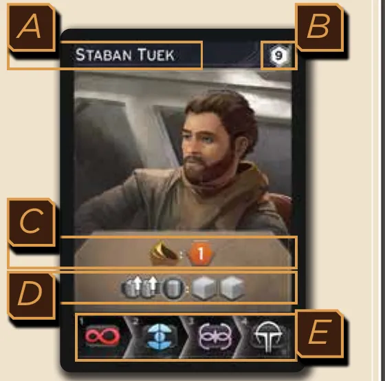
Uma carta de Rival: nome (A), valor do Espadachim (B), habilidade do Anel do Sinete (C), habilidade do Plano (D) e a ordem em que ele prioriza as Facções (E). Ilustração: folheto Rivais, Galápagos p. 1
Antes de começar, confira (3 ou 4 jogadores): Muralha-Escudo no lugar; 4 Alianças no alto das trilhas; Baralho de Conflito com 10 cartas (1 de I, 5 de II, 4 de III); Intriga embaralhada; Linha Imperial com 5 cartas; duas pilhas da Reserva; banco com vermes e Ganchos; cada jogador com Líder, baralho de 10, 1 água, 2 Agentes no Líder, Espadachim ao lado, disco de Pontos no 0 (no 1 com 4 jogadores), Combate no 0, 4 cubos nas trilhas, 3 tropas na guarnição, 3 Espiões e um Objetivo à vista; o Primeiro Jogador definido pelo Objetivo.
Partida de 3 jogadores. O que está errado nesta mesa?
No Uprising não existe Mentat; no lugar dele vai a Muralha-Escudo, abaixo da Refinaria de Especiaria p. 5 e 6.
Comece a jogar em 5 minutos
Meta: em 5 minutos de leitura, montar a mesa e jogar o seu primeiro turno sem abrir o manual.
A ideia do jogo
Cada rodada, você recebe 5 cartas e as usa de dois jeitos. Jogando uma de cada vez, cada carta manda um Agente a um espaço do tabuleiro, onde você pega recursos, tropas ou apoio das Facções. As cartas que sobram são reveladas no fim, para adquirir cartas melhores com Persuasão e dar força às suas unidades no Conflito da rodada. Quem chega a 10 Pontos de Vitória ativa o fim, e vence quem tiver mais p. 6.
Palavras do jogo
Espaço: cada retângulo do tabuleiro, com um ícone de Agente no canto superior esquerdo p. 9.
Ícone de Agente: os símbolos na coluna da esquerda da carta; dizem a que espaços ela manda o Agente p. 8 e 9.
Estoque: a sua área fora do tabuleiro, à vista. Banco: os recursos de todos p. 5.
Guarnição: o seu círculo no tabuleiro, onde ficam as tropas recrutadas. Conflito: o centro do tabuleiro, onde as unidades lutam p. 10.
Espaço de Combate: espaço com deserto e duas espadas cruzadas; em regra, só por ele se envia tropa ao Conflito p. 10.
Turno do Agente: o turno em que você joga uma carta e manda um Agente; o outro tipo é o Turno de Revelar p. 8.
Objetivo: carta que você recebe na montagem; diz quem começa e traz um ícone de batalha p. 5 e 14.
Monte a mesa
Monte tudo pela lista "Antes de começar, confira", no fim da montagem, logo acima p. 4 e 5.
Seu primeiro turno
No começo da rodada, revela-se a Carta de Conflito do topo (o prêmio do Combate) e cada um compra 5 cartas; depois, um turno por vez, em sentido horário. No seu primeiro turno, você faz um Turno do Agente (p. 8 a 10):
Jogue uma carta da mão virada para cima à sua frente.
Escolha um ícone de Agente da carta e mande um Agente do Líder a um espaço com esse ícone.
O espaço precisa estar vazio. Agente de qualquer jogador bloqueia.
Pague o custo do espaço antes e cumpra o requisito, se houver. Sem isso, não vai.
Receba o efeito do espaço e o da caixa do Agente da carta, na ordem que quiser. Espaço de Facção sobe seu cubo 1 espaço na trilha dela.
Se o espaço for de Combate, envie ao Conflito, se quiser, as tropas recrutadas neste turno e até 2 da guarnição.
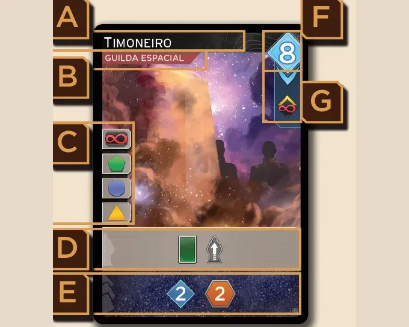
Anatomia da carta: nome (A), Facção (B), ícones de Agente (C), caixa do Agente (D), caixa de Revelar (E), custo em Persuasão (F) e efeito ao Adquirir (G). Ilustração: manual Galápagos p. 8
Quando acabarem seus Agentes, ou se preferir antes, o seu turno é o Turno de Revelar: você revela o resto da mão e usa só a parte de baixo dessas cartas (etapa 3).
Ainda não precisa saber
Custos com seta, requisitos de Influência e a tabela dos espaços: etapa 1. Espiões: etapa 2. O Turno de Revelar e as cartas novas: etapa 3. Força, vermes da areia, Muralha-Escudo, recompensas e Fabricantes: etapa 4. Influência, Alianças, ícones de batalha e o fim: etapa 5.
Como a partida acaba
Ao fim de cada rodada, se alguém tiver 10 Pontos de Vitória ou mais, ou se o Baralho de Conflito tiver acabado, a partida termina. Vence quem tiver mais pontos p. 6 e 15.
Prefere ver? Um resumo de uma partida, em português. Ele complementa este guia; em caso de diferença, vale o manual.
DUNA IMPERIUM UPRISING - Gameplay resumida, canal Duque Board Games · abrir no YouTube
0Antes de tudo: o que é este jogoOpcional
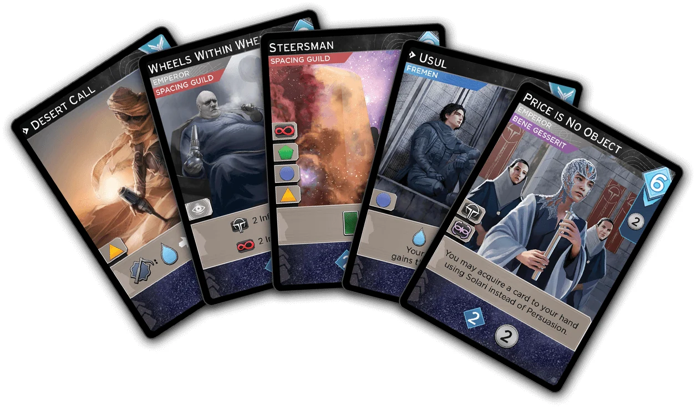
Imagem: Dire WolfAbrir esta seção
Construção de baralho com alocação de trabalhadores, inspirado nos filmes da Legendary Pictures e nos livros de Frank Herbert, Brian Herbert e Kevin J. Anderson; design de Paul Dennen p. 2 e 19.
Cada jogador é o Líder de uma Casa Maior e busca Pontos de Vitória em Combate, com Influência e com alianças com as Facções p. 6.
A mesma mão serve duas vezes: cada carta tem uma caixa do Agente e uma caixa de Revelar p. 8.
O baralho muda: todos começam com as mesmas 10 cartas; as que você adquire mudam os espaços a que tem acesso e a força que leva ao Conflito p. 6 e 17.
1Como este guia ensinaOpcional
Imagem: Dire Wolf (loja oficial)Abrir esta seção
Cinco etapas, na ordem da rodada. Cada uma tem a regra exata à vista, os casos especiais a um toque e exercícios de múltipla escolha; no fim, uma avaliação e uma folha de consulta.
2Etapa 1: o Turno do Agente
Por que funciona assim
Os oito ícones de Agentep. 9: Imperador, Guilda Espacial, Bene Gesserit, Fremen, Landsraad, Cidade, Comércio de Especiaria e Espião. Os sete primeiros estão na tabela abaixo; o Espião manda a qualquer espaço ligado a um posto de observação onde você tenha Espião (etapa 2).
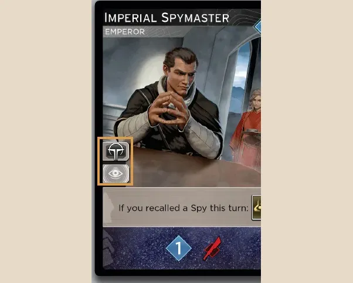
A carta Espião Mestre Imperial tem dois ícones de Agente, Imperador e Espião: ela manda o Agente a um dos dois espaços do Imperador ou a um espaço ligado a um posto onde você tenha Espião, mas a um só. A arte da carta está em inglês no próprio manual. Ilustração: manual Galápagos p. 9
Os espaços do tabuleiro (tabuleiro, p. 4 e 5; Guia). Requisito de Influência não se paga: basta ter p. 9. O bônus de quem controla vale toda vez que qualquer jogador, ele inclusive, manda Agente ao espaço p. 10. "Combate" marca os espaços que permitem enviar unidades ao Conflito (etapa 4).
Espaço
Ícone
Custo ou requisito
O que dá
Sardaukar
Imperador
4 especiarias
+1 Imperador, 1 Intriga, 4 tropas
Serviço Obediente
Imperador
+1 Imperador, contrato (sem o Módulo CHOAM, 2 Solaris; seção 7)
Paquete (Combate)
Guilda Espacial
5 especiarias
+1 Guilda, 5 tropas
Entregar Suprimentos
Guilda Espacial
+1 Guilda, 1 água
Espionagem
Bene Gesserit
1 especiaria
+1 Bene Gesserit, compra 1 carta, aloca 1 Espião
Segredos
Bene Gesserit
+1 Bene Gesserit, 1 Intriga; cada outro jogador com 4 ou mais Intrigas lhe dá 1, ao acaso
Táticas do Deserto (Combate)
Fremen
1 água
+1 Fremen, 1 tropa, exclui 1 carta
Fremkit (Combate)
Fremen
+1 Fremen, compra 1 carta
Alto Conselho
Landsraad
5 Solaris
1ª vez: disco de Conselheiro num assento e +2 de Persuasão em todo Revelar até o fim; depois: 2 especiarias, 1 Intriga, 3 tropas
Privilégio Imperial
Landsraad
2 de Influência com o Imperador; 3 Solaris
pode trocar 1 Intriga por outra; chama outro Agente seu; compra 1 carta
Espadachim
Landsraad
8 Solaris (6 depois que alguém tiver o seu)
o seu terceiro Agente, já nesta rodada e até o fim; uma vez por partida
Salão da Assembleia
Landsraad
1 Intriga; +1 Persuasão no seu Revelar enquanto o Agente estiver ali
Angariar Apoio
Landsraad
0 ou 2 Solaris
2 tropas; se pagou 2, também 1 água
Envio
Comércio de Especiaria
2 de Influência com a Guilda; 3 especiarias
5 Solaris e +1 de Influência com qualquer Facção
Aceitar Contrato
Comércio de Especiaria
compra 1 carta, contrato (sem o Módulo CHOAM, 2 Solaris)
Estação de Pesquisa (Combate)
Cidade
2 águas
2 tropas, compra 2 cartas
Sietch Tabr (Combate)
Cidade
2 de Influência com os Fremen
ou Ganchos de Criador, 1 tropa e 1 água; ou 1 água e pode remover a Muralha-Escudo
Refinaria de Especiaria (Combate)
Cidade
0 ou 1 especiaria
2 Solaris, ou 4 se pagou 1; quem controla ganha 1 Solari
Arrakina (Combate)
Cidade
1 tropa, compra 1 carta; quem controla ganha 1 Solari
Deserto Profundo (Combate)
Comércio de Especiaria
3 águas
bônus acumulado, mais 4 especiarias ou, com Ganchos de Criador, 2 vermes da areia
Bacia Hagga (Combate)
Comércio de Especiaria
1 água
bônus acumulado, mais 2 especiarias ou, com Ganchos de Criador, 1 verme da areia
Bacia Imperial (Combate)
Comércio de Especiaria
1 especiaria + bônus acumulado; quem controla ganha 1 especiaria
Regra adicional: Custo com setaRegra adicional: Chamar AgenteRegra adicional: Comprar e excluirVer um exemplo resolvidoPratique esta etapa: exercícios com respostas
3Etapa 2: os Espiões
Por que funciona assim
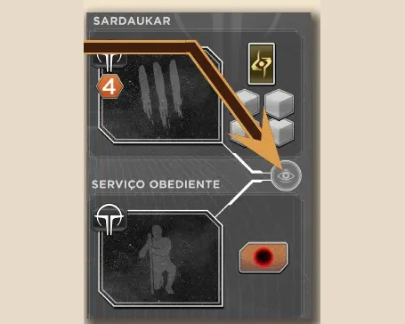
Um posto de observação, o círculo com o olho, ligado a dois espaços do Imperador: Sardaukar e Serviço Obediente. Ilustração: manual Galápagos p. 11Sobre a edição: Leitura do guia sobre EspiõesVer um exemplo resolvido
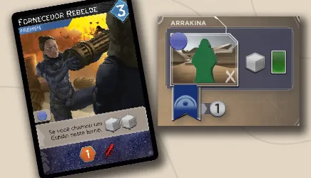
Abgail joga Fornecedor Rebelde e manda o Agente a Arrakina, onde está o marcador de Controle de João. Ilustração: manual Galápagos p. 11Pratique esta etapa: exercícios com respostas
4Etapa 3: o Turno de Revelar e o seu baralho
Por que funciona assimVer um exemplo resolvido
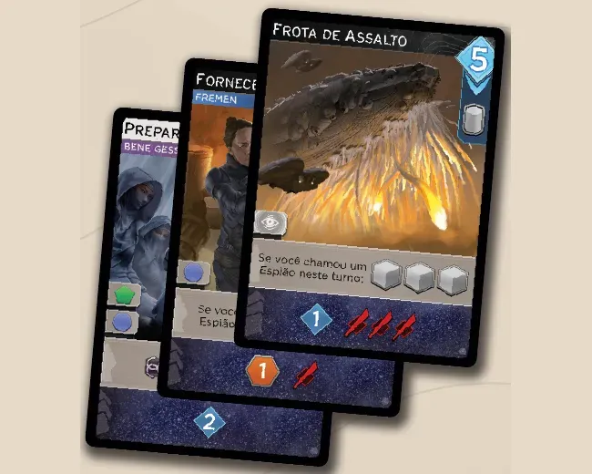
O Turno de Revelar de João: Prepare o Caminho, Fornecedor Rebelde e Frota de Assalto dão 3 de Persuasão e 4 espadas. Ilustração: manual Galápagos p. 13Pratique esta etapa: exercícios com respostas
5Etapa 4: o Conflito, o Combate e os Fabricantes
Por que funciona assim
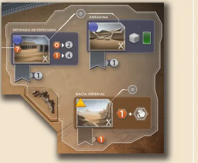
Os três locais protegidos pela Muralha-Escudo: Refinaria de Especiaria, Arrakina e Bacia Imperial, cada um com a bandeira do marcador de Controle. Ilustração: manual Galápagos p. 10
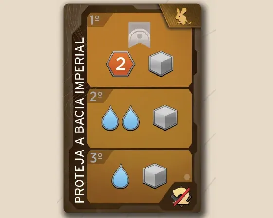
A carta Proteja a Bacia Imperial: a 1ª recompensa dá 2 especiarias, 1 tropa e o controle da Bacia Imperial; a 2ª, 2 águas e 1 tropa; a 3ª, 1 água e 1 tropa. No canto, o ícone de batalha Rato-Canguru. Ilustração: manual Galápagos p. 15
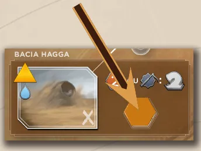
A Bacia Hagga, com o lugar da especiaria bônus no ícone de Fabricante, para onde aponta a seta. Ilustração: manual Galápagos p. 15Regra adicional: Ganhar o controleRegra adicional: Defesa de quem controlaRegra adicional: RecuarVer um exemplo resolvidoPratique esta etapa: exercícios com respostas
6Etapa 5: Facções, Intrigas, Objetivos e o fim da partida
Por que funciona assim
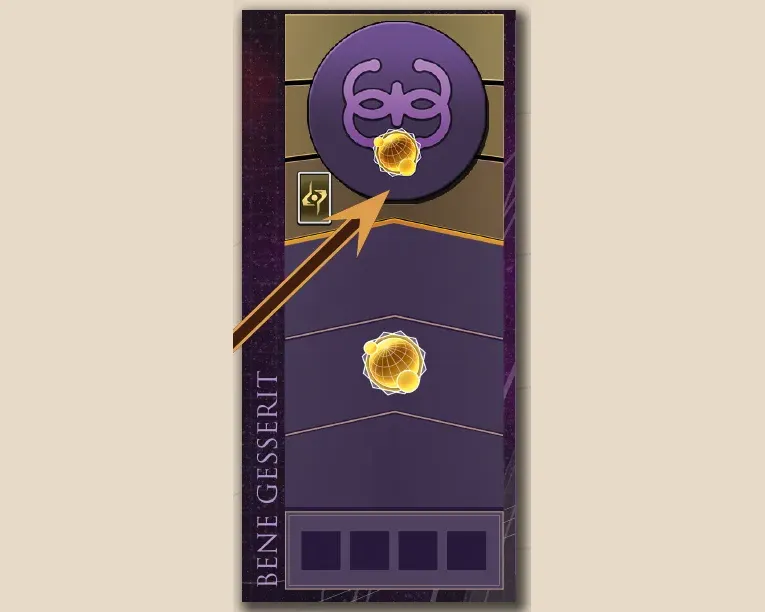
A trilha da Bene Gesserit: o Ponto de Vitória no espaço de 2 de Influência, o bônus no de 4 e o marcador de Aliança no alto. Ilustração: manual Galápagos p. 7
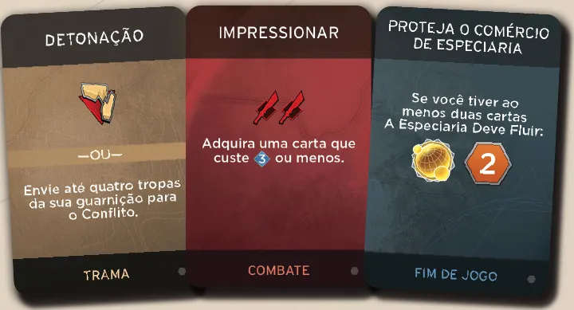
Os três tipos de Intriga: Trama, Combate e Fim de Jogo, escritos na faixa de baixo de cada carta. Ilustração: manual Galápagos p. 7
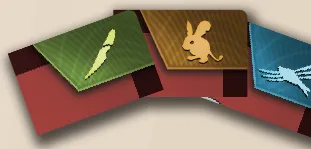
Os três ícones de batalha nas Cartas de Conflito: Dagacris, Rato-Canguru e Ornitóptero. Ilustração: manual Galápagos p. 14Regra adicional: Ganhar 2 de Influência de uma vezRegra adicional: Perder a Aliança ao cairVer um exemplo resolvidoPratique esta etapa: exercícios com respostas
7Situações especiaisOpcional
Imagem: Dire WolfAbrir esta seçãoRegra adicional: Turno do Agente é opcionalRegra adicional: Cartas que mudam as regrasRegra adicional: Módulo CHOAMSobre a edição: Contrato de ColheitaSobre a edição: Salão de Oratória
8Avaliação finalOpcional
Imagem: Dire Wolf (loja oficial)Abrir esta seção
Responda sem consultar. Cada resposta diz o que reler.
1. O que vai no tabuleiro abaixo da Refinaria de Especiaria na montagem?
A Muralha-Escudo, que protege três locais dos vermes p. 4 e 10. Releia a montagem.
2. Sua carta tem os ícones Fremen e Cidade. Quantos Agentes ela manda?
Um. Você escolhe um ícone só p. 9. Releia a etapa 1.
3. Para que serve Infiltrar?
Entrar em espaço ocupado, chamando o Espião do posto ligado p. 11. Releia a etapa 2.
4. Fim da partida, empate em pontos e em especiaria. O que decide?
Solari, depois água, depois tropas na guarnição p. 15. Releia a etapa 5.
9Para consultar durante a partida
Imagem: Dire Wolf
Montagem: ver "Antes de começar, confira", no fim da montagem.
Rodada: 1. Começo: revele o Conflito, cada um compra 5. 2. Turnos do Jogador, um por vez, sentido horário, até todos revelarem. 3. Combate. 4. Fabricantes. 5. Chamar.
Turno do Agente: uma carta, um ícone, um espaço vazio com o mesmo ícone. Custo e requisito antes. Efeito do espaço + caixa do Agente + Influência (espaço de Facção). Seta: opcional, uma vez.
Espiões: alocar em posto livre. Chamar para Infiltrar (espaço ocupado) ou Adquirir Inteligência (1 carta, antes dos efeitos). Ícone de Espião: espaço ligado ao seu Espião, que fica.
Turno de Revelar: revele a mão; caixas de Revelar só dessas cartas; adquira com Persuasão (Linha, Prepare o Caminho, A Especiaria Deve Fluir) para o descarte; força = 2 por tropa + 3 por verme no Conflito + 1 por espada revelada (0 sem unidade); limpe tudo para o descarte.
Unidades: recrutar = estoque para guarnição. Enviar ao Conflito, em regra, só em espaço de Combate: as recrutadas no turno + até 2 da guarnição. Verme: direto ao Conflito, em geral com Ganchos de Criador; nunca em Conflito protegido pela Muralha-Escudo.
Combate: Intrigas de Combate em rodadas de passe; 1ª e 2ª recompensa (3ª com 4 jogadores, ou no empate pelo 2º); força 0 não ganha; empate no 1º: 2ª para cada; empate no 2º: 3ª para cada. Verme no Conflito dobra a recompensa. Tropas voltam ao estoque, vermes ao banco.
Fabricantes: +1 especiaria bônus em cada um sem Agente.
Influência: 2 = 1 ponto (perde se cair); 4 = bônus; primeiro a 4 = Aliança e 1 ponto; só quem passa mais alto toma. Par de ícones de batalha = 1 ponto.
Fim: 10 pontos ou Conflito vazio, verificado no Chamar. Intrigas de Fim de Jogo e o curinga de batalha, depois mais pontos. Empate: especiaria, Solari, água, tropas na guarnição, Turno de Revelar mais recente (FAQ).
Regras conferidas no livro de regras da edição brasileira da Galápagos (Asmodee Brasil), arquivo DUN101_regras_v1.0, de 20 páginas, e nos dois folhetos que vêm com ele na Biblioteca de Downloads da Asmodee Brasil: Rivais (solo e 2 jogadores) e Partidas com Seis Jogadores. As páginas citadas são as do livro de regras; "Rivais" e "Seis" são os folhetos. O folheto Guia dos Espaços no Tabuleiro não está na biblioteca: a tabela dos espaços foi conferida no tabuleiro impresso no manual p. 4 e 5 e no Board Space Guide oficial em inglês da Dire Wolf ("Guia" nas citações). Este guia ensina a partida de 3 e 4 jogadores; 1, 2 e 6 jogadores aparecem resumidos na montagem.